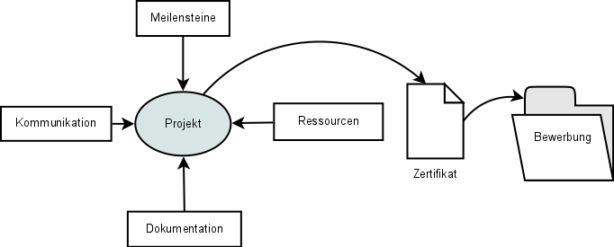
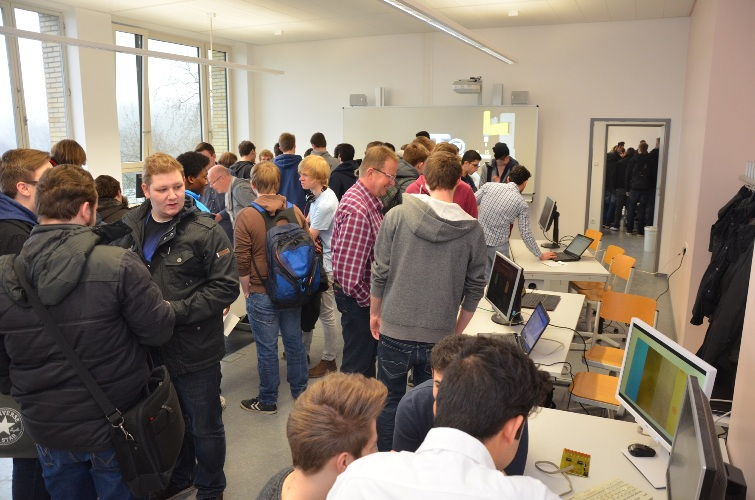

Motivation
„Computer sind spannend, Technik macht Spaß.“
So denken viele Schülerinnen und Schüler, wenn sie die Ausbildung zum Informationstechnischen Assistenten (ITA) beginnen. Den Computer kennen sie von zu Hause und unterwegs – man verbindet viele schöne Stunden mit ihm.
„Computer sind spannend, Technik macht Spaß“ – bis man ein Schulfach daraus macht.
Ernüchterung tritt ein, wenn man nach den ersten Monaten der Ausbildung feststellt, dass neben dem Spaß auch viel Theorie und abstraktes Denkvermögen nötig sind, um die Ausbildung zum ITA zu bestehen. Schnell verbreiten sich Frust und Unlust unter den Schülern.
Diese traurige Feststellung machten nicht nur die Schüler, sondern auch wir als Lehrer. Wir wollten gegensteuern, um den Spaß und die Neugier zurück in den Schulalltag zu holen.
Hinzu kommt, dass die Schülerinnen und Schüler ihre Ausbildung in Vollzeit und ohne betrieblichen Hintergrund absolvieren, welcher sich deutlich vom schulischen Alltag unterscheidet:
- Angestellte lösen ein relevantes Problem.
- Sie haben Kernarbeitszeiten innerhalb derer sie ihre Pausen frei einteilen.
- Sie arbeiten über mehrere Stunden an einer Aufgabe und sind keinem Stundenraster unterworfen, das Kontextwechsel erzwingt, wie er beim Übergang zwischen Schulstunden entsteht.
All dies hat uns bewogen, die bisher nicht ausreichend von der schulischen Ausbildung abgedeckten inhaltlichen Aspekte in den Schulalltag zu integrieren und die Freude am Umgang mit Technik wiederzubeleben.
Hierbei ist der Projekttag entstanden.

Teamarbeit
Der Projekttag wird auf Schüler- und Lehrerseite als Teamarbeit gelebt und durchgeführt. Mehrere Lehrerkräfte mit unterschiedlichen fachlichen Schwerpunkten betreuen und unterstützen die Auszubildenden während ihrer Arbeit. Dabei decken wir derzeit die Kerngebiete Programmieren, Datenbanken, Betriebssysteme, Netzwerke und Elektrotechnik mit drei Lehrkräften ab.
Aufbau und Ablauf
Ein Projekttag ist ein fester Tag im Stundenplan der Schülerinnen und Schüler, der ca. 5 Zeitstunden umfasst, die nicht von anderen Fächern unterbrochen werden. Die Schülerinnen und Schüler können sich selbst ihre Arbeits- und Pausenzeiten einteilen – es gibt kein festes Pausenraster. Hierdurch können die Arbeitsphasen ausgedehnt werden und die Auszubildenden erhalten die Möglichkeit, sich vertiefend oder wiederholend mit Inhalten auseinanderzusetzen, die ihren Vorlieben, Neigungen und Bedürfnissen entsprechen.
Die Ergebnisse und Leistungen werden nicht benotet. Arbeitsergebnisse können jedoch in anderen Fächern durch Workshops oder Referate „zweit verwertet“ werden. Zudem werden die Projekte am Ende eines Schuljahres auf einem Zertifikat als Nachweis ausgewiesen, welches sie einer Bewerbung beifügen können. Eine Messe am Schuljahresende bietet eine weitere Möglichkeit, die Ergebnisse zu präsentieren.
Informationen zu Beginn
Zu Beginn eines Schuljahres werden die Schülerinnen und Schüler in einer Kick-Off-Veranstaltung informiert. Hier werden die Rahmenbedingungen erläutert sowie Möglichkeiten und Pflichten dargestellt. Zudem können Unklarheiten beseitigt und Fragen beantwortet werden. Ein wichtiges Ziel dieser Veranstaltung ist, ein gegenseitiges Vertrauensverhältnis zu konsolidieren und an die Reife der Auszubildenden zu appellieren.
Im weiteren Verlauf beginnt jeder Projekttag einmal pro Woche mit einer kurzen Informationsphase. Die Schülerinnen und Schüler kommen mit den Fachlehrern zusammen, um organisatorische oder inhaltliche Aspekte zu besprechen. Es können aktuelle Veranstaltungen oder interessante Projekte in den Fokus genommen werden.
Anschließend gehen alle selbständig in die Projektarbeit.
Die Schülerinnen und Schüler wählen ein Projekt aus einem Archiv aus oder überlegen und formulieren eigene Ideen. Insbesondere der letzte Punkt überrascht uns immer wieder. Bei der Formulierung eigener Ideen sind wir immer erstaunt, ob der kreativen und spannenden Ideen, die die Schülerinnen und Schüler entwickeln. Sei es ein selbst gebauter fahrender Roboter, eine Retro-Spielekonsole oder ein DVBT-Stick zur Ortung von Flugzeugen.
Für uns als Lehrkräfte ist es wichtig, dass das gewählte Projekt Neues vermittelt, Bestehendes festigt oder Altes wiederholt. Ferner sollen eine fachliche Tiefe und ein praktischer Bezug erkennbar sein.
Wiki
In einer Wiki-Installation` <#sdfootnote1sym>`__ werden die Beschreibungen der Projekte inklusive einer Aufwands- und Schwierigkeitsabschätzung hinterlegt. Die Fachlehrer können dort ihre Projekte vorstellen, ablegen und mit anderen Projekten verzahnen. Zudem findet dort auch die Organisation einer Abschlussmesse statt. Es ist öffentlich einsehbar.
Räumliche Entfaltung
Neben zeitlichen und inhaltlichen Aspekten haben wir auch die räumliche Situation berücksichtigt und Räume mit unterschiedlichen Anforderungen eingeplant. Es gibt einem vernetzten Computerraum für Programmier- und Netzwerkprojekte, einen Werkstattraum für praktische und elektrotechnische Arbeiten und einen ruhigen Arbeitsraum für konzentriertes Arbeiten. Der Flur vor den Räumen wird bei Projekten genutzt, die mehr Platz benötigen (wie ein selbst-fahrender Roboter) oder, bei denen es lauter werden kann (Starten eines Servers, Saugen eines Computers).
Keine Noten – keine Angst
Die Schülerinnen und Schüler erhalten für ihre Projektarbeit bewusst keine Zeugnisnoten. Die Arbeitsatmosphäre ist dadurch von der Entdeckungslust und Experimentierfreude bestimmt. Eine Rückmeldung erhalten sie dennoch durch Gespräche und eine Messe am Ende des Schuljahres.
Anwesenheitsliste – ein Eigengewächs
Die Pausenzeiten werden während der Projektphase von den Auszubildenden selbständig organisiert. Einige der Auszubildenden sind so sehr in die Arbeit vertieft, dass sie gar keine Pausen machen. Die Stundenklingel hat für uns daher eine geringe Bedeutung.
Die Schülerinnen und Schüler halten Pausengänge in einer Anwesenheitsliste fest. Diese Liste wurde sogar selbst Bestandteil verschiedener Projekte.
Zunächst wurde sie mit Papier und Stift geführt. Ein umständliches Unding für einen technikbegeisterten Schüler. Kurzerhand entschloss er sich, eine Desktop-Anwendung zu entwickeln, in der die Zeiten auf einem zentralen Rechner eingetragen werden konnten – ganz ohne Stift. Die nächste Generation der Software entstand ein Jahr später. Nun fußte sie auf einer Webanwendung, die auf einem Raspberry Pi läuft, auf den alle aus dem Raumnetz zugreifen können – mit detaillierten Statistiken und einer Backupfunktion. Durch die Statistikfunktion entwickelte sich schnell eine Diskussion um das Thema Datenschutz, der gewahrt bleiben musste.
Dieses Beispiel zeigt gut, wie aus eigenen Problemlagen heraus kreative Lösungen geplant und umgesetzt wurden, die nicht von uns Fachlehrern motiviert waren. Dies evozierte eine starke intrinsische Motivation sowie Verbundenheit mit der eigenen Arbeit und führte zu großem Stolz gegenüber dem eigenen Werk.
Die ITA-Messe

Die Projektergebnisse werden einmal im Jahr auf einer schulinternen Messe vorgestellt. Hierbei planen die Auszubildenden selbständig die Lage der Stände, den zeitlichen Ablauf, erstellen einen Flyer für die Besucher und machen Fotos während der Veranstaltung. Die Messe bildet den Höhepunkt und Abschluss für die erstellten Projekte.
Als Gäste werden die Schülerinnen und Schüler der Eingangsklassen und andere Fachlehrer eingeladen. Gerade für die Eingangsklassen zeigen die Projektergebnisse eine Perspektive ihrer Ausbildung, mit der Konsequenz, dass sich viele Schüler auf den Projekttag freuen.
Reflexion
Bisher funktioniert unser Projekttag auf vielen Ebenen sehr gut. Wir wollen ihn aber stetig verbessern. Daher bitten wir am Ende eines Schuljahres alle um eine Rückmeldung. Wir wollen Schwachstellen und blinde Flecke aufdecken und das Potenzial für die kontinuierliche Fortentwicklung der Veranstaltung aufzeigen.
Die Reflexion fand im ersten Jahr mit einem Papier-Fragebogen statt. Er wurde mittlerweile durch eine Online-Befragung ersetzt, die eine direkte Auswertung in derselben Stunde in einem geführten Klassengespräch ermöglicht.
Die Veranstaltungen der letzten Jahre wurden von den Schülerinnen und Schülern auf der fachlichen, sozialen und emotionalen Ebene überwiegend positiv beurteilt. Die Ergebnisse sind auch in unserem Wiki veröffentlicht.
Zusätzlich gibt es ein Treffen aller beteiligten Fachlehrer, in dem das aktuelle Jahr reflektiert und das nächste Jahr geplant wird.
Fazit
Immer mehr Hackerspaces sprießen aus dem Boden, Repair-Cafes entstehen und der Bastelcomputer Raspberry Pi wird zur erfolgreichsten prototypischen Experimentierplattform. All dies zeigt, dass es ein großes technisches Interesse bei Jugendlichen an Technik-Themen gibt. Allein die Umsetzung im Schulalltag führt häufig zu falschen Motivationslagen und Frustration. Mit dem Projekttag versuchen wir eine Gratwanderung zwischen Anspruch, Spaß, Freiheit, Kreativität und Selbstbestimmung.
„Computer sind spannend, Technik macht Spaß“
Wenn man den Leistungsdruck herausnimmt und die Schülerinnen und Schüler eigene Wege gehen lässt, entstehen erstaunliche Ergebnisse und der Satz stimmt wieder – selbst in der Schule.
Dieser Artikel erschien zuerst in der Juniausgabe 2016 der Zeitschrift bbw - Beruflicher Bildungsweg.